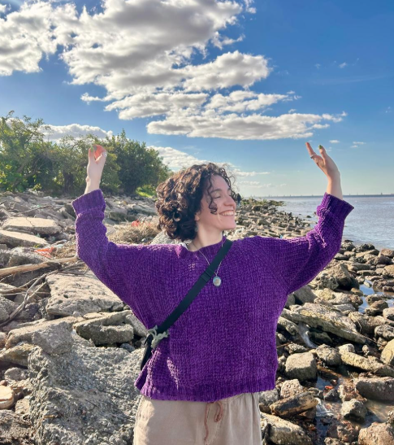

un poco sobre mi

¿Quien soy?
Soy escritora, astróloga y tarotista, pisciana, crecida cerca de las montañas mendocinas y rodeada de gatitos siempre. Desde la astrología y el tarot, creo espacios de consulta y aprendizaje sensibles y transformadores para habitar lo profundo, lo poético y lo vital, donde lo sutil se vuelve cotidiano y lo cotidiano se revela simbólico. Acá comparto lo que amo: simbolismo, lenguajes y expansión. Te invito a ser parte de este cauce resonante y expresivo.